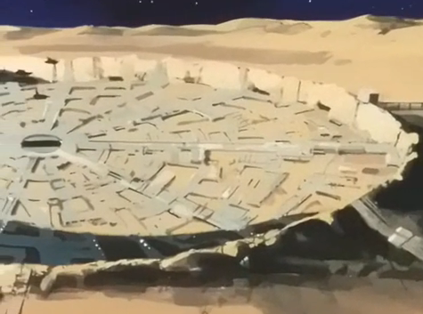

Amman City Amman City
Moon, Near Side Urban Fortification One of the many LMC controlled lunar cities, Amman is known for its staunch patriotism, as well as for its close proximity to the Duchy base of Granada on the moons farther side. Like most Lunar cities it is partially above ground and partially below, but entirely airtight. Mr. Wong A fierce patriot for the colonial cause, Mr. Wong believes that what Zeon is doing is wrong, but what the Federation is doing is worse. He is a politician first, but knows how to pilot a mobile suit, and is deadly in his Petite. Amman City  |